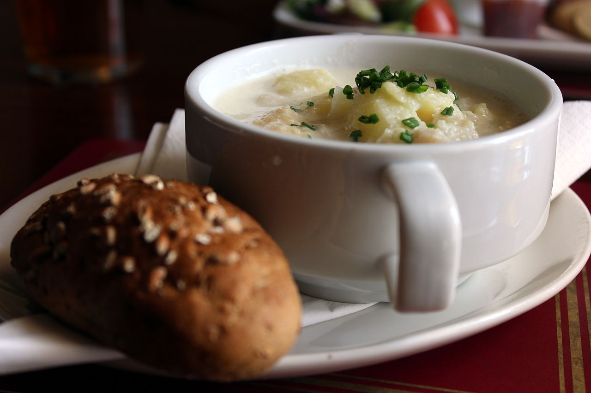

Cullen Skink

Description
Cullen skink is a thick Scottish soup made of smoked haddock, potatoes and onions.
An authentic Cullen skink will use finnan haddie, but it may be prepared with any other undyed smoked haddock.
This soup is a local speciality, from the town of Cullen in Moray, on the northeast coast of Scotland.
Ingredients
2 pounds smoked haddock fillets, undyed
2 ½ cups milk
2 large baking potatoes, peeled and diced
1 large onion, finely chopped
ground black pepper to taste
2 tablespoons chopped fresh parsley for garnish
Steps
- In a saucepan over medium heat, combine the haddock and milk. Simmer for about 15 minutes, or until
the fish flakes easily with a fork.
- When the fish is done, remove it with a slotted spoon and set aside in a bowl. Add the potatoes
and onion to the milk, and simmer until tender, about 10 minutes.
- Transfer the contents of the pan to a blender, in batches if needed, and blend until smooth and creamy. Return to the
pan and flake the fish into the soup.
- Heat through gently, do not boil. Serve immediately. Season with pepper and garnish with parsley to individual tastes.